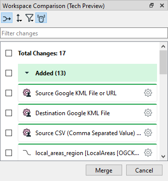
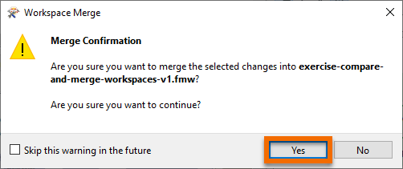

After completing this unit, you’ll be able to:
You created a workspace to do some attribute cleanup on some 3-1-1 call data. 3-1-1 is a special phone number used by municipalities in Canada and the United States to manage non-emergency municipal service calls.
A few weeks later, your colleague modified the workspace to summarize the call records and join them to spatial data. They’ve added a few feature types and added/modified transformers. Now you have two versions and would like to rectify them into an accepted shared version of the workspace. You can take advantage of FME 2022.0’s new Workspace Comparison and Merge (Workspace Comparison for short).
Open the starting workspace in FME Workbench (2022.0 or later).
Download the updated workspace.
Click File > Compare Workspace...

Select the workspace with changes, exercise-compare-and-merge-workspaces-v2.fmw, and click Open.
The workspace with changes opens in the Workspace Comparison window.

Look in the Workspace Comparison window on the right. You should see a list of changes.
One of the changes reports that the FeatureJoiner was Modified. Find it in the list.

After finding it, click it once to highlight the transformer with changes on the canvas.

Double-click the FeatureJoiner change in the Workspace Comparison window to open the FeatureJoiner Properties Comparison dialog.

Here you can confirm that in the original workspace, you did not configure the FeatureJoiner. However, the new version joins tabular CSV data of 3-1-1 call records to local planning area polygons read from a KML file. The shared key is the name of the local planning area stored in attributes Name and Local Area, respectively.
Click Close.
Browse the rest of the changes. It looks like all of them are necessary for the new workspace that summarizes calls by local area.
Click the Toggle merge mode button in the Workspace Comparison toolbar. Checkboxes appear by all the changes.

Select all changes by clicking the checkbox next to Total Changes: 17 at the top of the window.

Click Merge at the bottom of the window.

FME will prompt you to ensure you want to merge the changes. Click OK.

You will see the new, modified version of the workspace. You can save it to store the merged changes.
We’d appreciate it if you could fill out this quick optional survey on this new feature. Your answers will not affect your score on the module; take the Quiz below to complete the module.